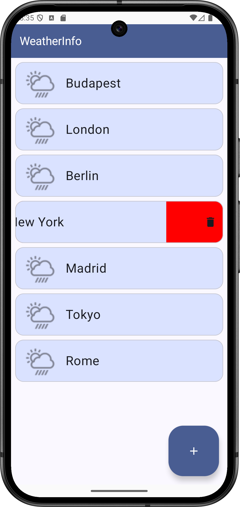

Labor 07 - Weather Info alkalmazás készítése¶
Bevezető¶
A labor során egy időjárás információkat megjelenítő alkalmazás elkészítése a feladat. A korábban látott UI elemek használata mellett láthatunk majd példát hálózati kommunkáció hatékony megvalósítására is a Retrofit library felhasználásával.
Az alkalmazás városok listáját jeleníti meg egy RecyclerView-ban, egy kiválasztott város részletes időjárás adatait pedig az OpenWeatherMap REST API-jának segítségével kérdezi le. A részletező nézeten egy ViewPager-ben két Fragment-en lehet megtekinteni a részleteket. Új város hozzáadására egy FloatingActionButton megnyomásával van lehetőség.
REST



Felhasznált technológiák:
Az alkalmazás specifikációja¶
Az alkalmazás két Activity-ből áll.
Az alkalmazás indulásakor megjelenő Activity a felhasználó által felvett városok listáját jeleníti meg. Minden lista elemhez tartozik egy Remove gomb, aminek a megnyomására az adott város törlődik a listából. Új várost a nézet jobb alsó sarkában található FloatingActionButton megnyomásával lehet felvenni.
Egy városra való kattintás hatására megnyílik egy új Activity két Fragment-tel, amik között ViewPager-rel lehet váltani. Az első Fragment a kiválasztott város időjárásának leírását és az ahhoz tartozó ikont jeleníti meg. A második Fragment-en a városban mért átlagos, minimum és maximum hőmérséklet, a légnyomás és a páratartalom értéke látható.
Laborfeladatok¶
A labor során az alábbi feladatokat a laborvezető segítségével, illetve a jelölt feladatokat önállóan kell megvalósítani.
- Város lista megvalósítása: 1 pont
- Részletező nézet létrehozása és bekötése a navigációba: 1 pont
- Hálózati kommunikáció megvalósítása: 1 pont
- A hálózati réteg bekötése a részletező nézetbe: 1 pont
- Önálló feladat: város listából törlés megvalósítása: 1 pont
A labor során egy komplex időjárás alkalmazás készül el. A labor szűkös időkerete miatt szükség lesz nagyobb kódblokkok másolására, azonban minden esetben figyeljünk a laborvezető magyarázatára, hogy a kódrészek érthetőek legyenek. A cél a bemutatott kódok megértése és a felhasznált libraryk használatának elsajátítása.
Elnézést kérünk az eddigieknél nagyobb kód blokkokért, de egy ilyen, bemutató jellegű feladat kisebb méretben nem oldható meg, illetve a labor elveszítené a lényegét, ha csak egy „hello world” hálózati kommunikációs lekérést valósítanánk meg. Köszönjük a megértést.
Előkészületek¶
A feladatok megoldása során ne felejtsd el követni a feladat beadás folyamatát.
Git repository létrehozása és letöltése¶
-
Moodle-ben keresd meg a laborhoz tartozó meghívó URL-jét és annak segítségével hozd létre a saját repository-dat.
-
Várd meg, míg elkészül a repository, majd checkout-old ki.
Egyetemi laborokban, ha a checkout során nem kér a rendszer felhasználónevet és jelszót, és nem sikerül a checkout, akkor valószínűleg a gépen korábban megjegyzett felhasználónévvel próbálkozott a rendszer. Először töröld ki a mentett belépési adatokat (lásd itt), és próbáld újra.
-
Hozz létre egy új ágat
megoldasnéven, és ezen az ágon dolgozz. -
A
neptun.txtfájlba írd bele a Neptun kódodat. A fájlban semmi más ne szerepeljen, csak egyetlen sorban a Neptun kód 6 karaktere.
Projekt létrehozása¶
Első lépésként indítsuk el az Android Studio-t, majd:
1. Hozzunk létre egy új projektet, válasszuk az Empty Activity lehetőséget.
2. A projekt neve legyen WeatherInfo, a kezdő package pedig hu.bme.aut. android.weatherinfo
3. Nyelvnek válasszuk a Kotlin-t.
4. A minimum API szint legyen API21: Android 5.0.
5. A Use legacy android.support libraries pontot ne pipáljuk be.
FILE PATH
A projekt a repository-ban lévő WeatherInfo könyvtárba kerüljön, és beadásnál legyen is felpusholva! A kód nélkül nem tudunk maximális pontot adni a laborra!
Nevezzük át a generált Activityt CityActivity, a hozzá tartozó layout fájlt pedig activity_city névre.
Kapcsoljuk be a ViewBinding-ot. Ehhez az app modulhoz tartozó build.gradle fájlban az android blokkon belülre illesszük be az engedélyező kódrészletet (majd kattintsunk a jobb felül megjelenő Sync Now gombra).
buildFeatures {
viewBinding true
}
Töltsük le és tömörítsük ki az alkalmazáshoz szükséges erőforrásokat , majd másoljuk be őket a projekt app/src/main/res mappájába (Studio-ban a res mappa kijelölése után Ctrl+V)!
Az app modulhoz tartozó build.gradle fájlban a dependencies blokkhoz adjuk hozzá a Retrofit és Glide libraryket:
dependencies{
//...
def retrofit_version = "2.9.0"
implementation "com.squareup.retrofit2:retrofit:$retrofit_version"
implementation "com.squareup.retrofit2:converter-gson:$retrofit_version"
def glide_version = "4.14.2"
implementation "com.github.bumptech.glide:glide:$glide_version"
annotationProcessor "com.github.bumptech.glide:compiler:$glide_version"
}
Ezután kattintsunk a jobb felső sarokban megjelenő Sync now gombra.
Retrofit
A Retrofit a fejlesztő által leírt egyszerű, megfelelően annotált interfészek alapján kódgenerálással állít elő HTTP hivásokat lebonyolító implementációt. Kezeli az URL-ben inline módon adott paramétereket, az URL queryket, stb. Támogatja a legnépszerűbb szerializáló/deszerializáló megoldásokat is (pl.: Gson, Moshi, Simple XML, stb.), amikkel Java/Kotlin objektumok, és JSON vagy XML formátumú adatok közötti kétirányú átalakítás valósítható meg. A laboron ezek közül a Gsont fogjuk használni a JSON-ban érkező időjárás adatok konvertálására.
Glide
A Glide egy hatékony képbetöltést és -cache-elést megvalósító library Androidra. Egyszerű interfésze és hatékonysága miatt használjuk.
Az alkalmazásban szükségünk lesz internet elérésre. Vegyük fel az AndroidManifest.xml állományban az Internet permission-t az application tagen kívülre:
<uses-permission android:name="android.permission.INTERNET" />
Engedélyek
Androidon API 23-tól (6.0, Marshmallow) az engedélyek két csoportba lettek osztva. A normal csoportba tartozó engedélyeket elég felvenni az AndroidManifest.xml fájlba az előbb látott módon és az alkalmazás automatikusan megkapja őket. A dangerous csoportba tartozó engedélyek esetén ez már nem elég, futás időben explicit módon el kell kérni őket a felhasználótól, aki akármikor meg is tagadhatja az alkalmazástól a kért engedélyt. Az engedélyek kezeléséről bővebben a developer.android.com oldalon lehet tájékozódni.
Vegyük fel az alábbi szöveges erőforrásokat a res/values/strings.xml-be:
<resources>
<string name="app_name">WeatherInfo</string>
<string name="action_settings">Settings</string>
<string name="title_activity_city">Cities</string>
<string name="remove">Remove</string>
<string name="new_city">New city</string>
<string name="new_city_hint">City</string>
<string name="ok">OK</string>
<string name="cancel">Cancel</string>
<string name="title_activity_details">DetailsActivity</string>
<string name="weather">Weather</string>
<string name="temperature">Temperature</string>
<string name="min_temperature">Min temperature</string>
<string name="max_temperature">Max temperature</string>
<string name="pressure">Pressure</string>
<string name="humidity">Humidity</string>
<string name="main">Main</string>
<string name="details">Details</string>
</resources>
OpenWeatherMap API kulcs¶
Regisztráljunk saját felhasználót az OpenWeatherMap oldalon, és hozzunk létre egy API kulcsot, aminek a segítségével használhatjuk majd a szolgáltatást az alkalmazásunkban!
- Kattintsunk a Sign in majd a Create an account gombra.
- Töltsük ki a regisztrációs formot
- A Company mező értéke legyen "BME", a Purpose értéke legyen "Education/Science"
- Sikeres regisztráció után az API keys tabon található az alapértelmezettként létrehozott API kulcs.
A kapott API kulcsra később szükségünk lesz az időjárás adatokat lekérő API hívásnál.
1. Városlista megvalósítása (1 pont)¶
Valósítsuk meg az egy RecyclerView-ból álló, városok listáját megjelenítő CityActivity-t!
A város nevére kattintva jelenik majd meg egy részletező nézet (DetailsAcitivity), ahol az időjárás információk letöltése fog történni. Új város felvételére egy FloatingActionButton fog szolgálni.
Cseréljük le az activity_city.xml tartalmát egy RecyclerView-ra és egy FloatingActionButton-re:
<?xml version="1.0" encoding="utf-8"?>
<androidx.constraintlayout.widget.ConstraintLayout xmlns:android="http://schemas.android.com/apk/res/android"
xmlns:app="http://schemas.android.com/apk/res-auto"
xmlns:tools="http://schemas.android.com/tools"
android:layout_width="match_parent"
android:layout_height="match_parent"
tools:context=".CityActivity">
<androidx.recyclerview.widget.RecyclerView
android:id="@+id/mainRecyclerView"
android:layout_width="0dp"
android:layout_height="0dp"
app:layout_behavior="@string/appbar_scrolling_view_behavior"
app:layout_constraintBottom_toBottomOf="parent"
app:layout_constraintEnd_toEndOf="parent"
app:layout_constraintStart_toStartOf="parent"
app:layout_constraintTop_toTopOf="parent" />
<com.google.android.material.floatingactionbutton.FloatingActionButton
android:id="@+id/fab"
android:layout_width="wrap_content"
android:layout_height="wrap_content"
android:layout_gravity="bottom|end"
android:layout_margin="24dp"
android:src="@drawable/ic_add_white_36dp"
app:layout_constraintBottom_toBottomOf="parent"
app:layout_constraintEnd_toEndOf="parent" />
</androidx.constraintlayout.widget.ConstraintLayout>
Az egyes funkciókhoz tartozó osztályokat külön package-ekbe fogjuk szervezni. Előfordulhat, hogy a másolások miatt az Android Studio nem ismeri fel egyből a package szerkezetet, így ha ilyen problémánk lenne, az osztály néven állva Alt+Enter után állítassuk be a megfelelő package nevet.
A hu.bme.aut.android.weatherinfo package-ben hozzunk létre egy feature nevű package-et. A feature package-ben hozzunk létre egy city nevű package-et. Drag and drop módszerrel helyezzük át a CityActivity-t a city package-be, a felugró dialógusban pedig kattintsunk a Refactor gombra.
A CityActivity kódját cseréljük le a következőre:
class CityActivity : AppCompatActivity(), CityAdapter.OnCitySelectedListener,
AddCityDialogFragment.AddCityDialogListener {
private lateinit var binding: ActivityCityBinding
private lateinit var adapter: CityAdapter
override fun onCreate(savedInstanceState: Bundle?) {
super.onCreate(savedInstanceState)
binding = ActivityCityBinding.inflate(layoutInflater)
setContentView(binding.root)
initFab()
initRecyclerView()
}
private fun initFab() {
binding.fab.setOnClickListener {
// TODO: Show new city dialog
}
}
private fun initRecyclerView() {
binding.mainRecyclerView.layoutManager = LinearLayoutManager(this)
adapter = CityAdapter(this)
adapter.addCity("Budapest")
adapter.addCity("Debrecen")
adapter.addCity("Sopron")
adapter.addCity("Szeged")
binding.mainRecyclerView.adapter = adapter
}
override fun onCitySelected(city: String?) {
// Todo: Start DetailsActivity with the selected city
}
override fun onCityAdded(city: String?) {
adapter.addCity(city!!)
}
}
A city package-ben hozzuk létre a CityAdapter osztályt:
class CityAdapter(private val listener: OnCitySelectedListener) : RecyclerView.Adapter<CityAdapter.CityViewHolder>() {
private val cities: MutableList<String> = ArrayList()
interface OnCitySelectedListener {
fun onCitySelected(city: String?)
}
override fun onCreateViewHolder(parent: ViewGroup, viewType: Int): CityViewHolder {
val view = LayoutInflater.from(parent.context).inflate(R.layout.item_city, parent, false)
return CityViewHolder(view)
}
override fun onBindViewHolder(holder: CityViewHolder, position: Int) {
val item = cities[position]
holder.bind(item)
}
override fun getItemCount(): Int = cities.size
fun addCity(newCity: String) {
cities.add(newCity)
notifyItemInserted(cities.size - 1)
}
fun removeCity(position: Int) {
cities.removeAt(position)
notifyItemRemoved(position)
if (position < cities.size) {
notifyItemRangeChanged(position, cities.size - position)
}
}
inner class CityViewHolder(private val itemView: View) : RecyclerView.ViewHolder(itemView) {
var binding = ItemCityBinding.bind(itemView)
var item: String? = null
init {
binding.root.setOnClickListener { listener.onCitySelected(item) }
}
fun bind(newCity: String?) {
item = newCity
binding.CityItemNameTextView.text = item
}
}
}
Hozzuk létre a res/layout mappában az item_city.xml layoutot:
<?xml version="1.0" encoding="utf-8"?>
<LinearLayout xmlns:android="http://schemas.android.com/apk/res/android"
xmlns:tools="http://schemas.android.com/tools"
android:layout_width="match_parent"
android:layout_height="wrap_content"
android:orientation="horizontal"
android:paddingBottom="8dp"
android:paddingLeft="16dp"
android:paddingRight="16dp"
android:paddingTop="8dp"
android:weightSum="3">
<TextView
android:id="@+id/CityItemNameTextView"
android:layout_width="0dp"
android:layout_height="wrap_content"
android:layout_weight="2"
tools:text="Budapest" />
<Button
android:id="@+id/CityItemRemoveButton"
android:layout_width="0dp"
android:layout_height="wrap_content"
android:layout_weight="1"
android:text="@string/remove" />
</LinearLayout>
Igény szerint vizsgáljuk meg a laborvezetővel a CityAdapter osztályban az alábbiakat:
- Hogyan történik a lista tartalmi elemeinek kezelése?
- Hogyan épül fel egy lista elem?
- Hogyan történik a lista elemen a kiválasztás események kezelése? Hogyan értesítjük a CityActivity-t egy elem kiválasztásáról?
- Hogyan kerültek megvalósításra az addCity(...) és removeCity(…) metódusok?
A CityActivity-vel kapcsolatos következő lépés az új város nevét bekérő dialógus (DialogFragment) megvalósítása és bekötése.
Hozzunk létre egy dialog_new_city.xml nevű layout fájlt a res/layout mappában a következő tartalommal:
<?xml version="1.0" encoding="utf-8"?>
<LinearLayout xmlns:android="http://schemas.android.com/apk/res/android"
android:layout_width="match_parent"
android:layout_height="match_parent"
android:orientation="vertical"
android:padding="24dp">
<EditText
android:id="@+id/NewCityDialogEditText"
android:layout_width="match_parent"
android:layout_height="wrap_content"
android:hint="@string/new_city_hint"
android:inputType="text" />
</LinearLayout>
A city package-ben hozzuk létre az AddCityDialogFragment osztályt:
class AddCityDialogFragment : AppCompatDialogFragment() {
private lateinit var binding: DialogNewCityBinding
private lateinit var listener: AddCityDialogListener
interface AddCityDialogListener {
fun onCityAdded(city: String?)
}
override fun onAttach(context: Context) {
super.onAttach(context)
binding = DialogNewCityBinding.inflate(LayoutInflater.from(context))
listener = context as? AddCityDialogListener
?: throw RuntimeException("Activity must implement the AddCityDialogListener interface!")
}
override fun onCreateDialog(savedInstanceState: Bundle?): Dialog {
return AlertDialog.Builder(requireContext())
.setTitle(R.string.new_city)
.setView(binding.root)
.setPositiveButton(R.string.ok) { _, _ ->
listener.onCityAdded(
binding.NewCityDialogEditText.text.toString()
)
}
.setNegativeButton(R.string.cancel, null)
.create()
}
}
Igény szerint vizsgáljuk meg a laborvezetővel az AddCityDialogFragment implementációjában az alábbiakat:
- Hogyan ellenőrizzük azt, hogy az Activity, amihez a DialogFragment felcsatolódott implementálja-e az AddCityDialogListener interfészt?
- Hogyan kerül beállításra az egyedi layout a DialogFragment-ben?
- Hogyan térünk vissza a beírt városnévvel?
Szorgalmi feladat otthonra: az alkalmazás ne engedje a város létrehozását, ha a városnév mező üres! Tipp: http://stackoverflow.com/questions/13746412/prevent-dialogfragment-from-dismissing-when-button-is-clicked
Végül egészítsük ki a CityActivity initFab(…) függvényét úgy, hogy a gombra kattintva jelenjen meg az új dialógus:
private fun initFab() {
binding.fab.setOnClickListener {
AddCityDialogFragment().show(supportFragmentManager, AddCityDialogFragment::class.java.simpleName)
}
}
Indítsuk el az alkalmazást, amely már képes városnevek bekérésére és megjelenítésére.
BEADANDÓ (1 pont)
Készíts egy képernyőképet, amelyen látszik a városnevek listája egy újonnan hozzáadott várossal, az AddCityDialogFragment kódja, valamint a neptun kódod a kódban valahol kommentként. A képet a megoldásban a repository-ba f1.png néven töltsd föl.
A képernyőkép szükséges feltétele a pontszám megszerzésének.
2. Részletező nézet létrehozása és bekötése a navigációba (1 pont)¶
A következő lépésben a hu.bme.aut.android.weatherinfo.feature package-en belül hozzunk létre egy details nevű packaget.
A details package-ben hozzunk létre egy Empty Activity típusú Activity-t DetailsActivity néven.
A hozzá tartozó activity_details.xml layout kódja:
<?xml version="1.0" encoding="utf-8"?>
<LinearLayout xmlns:android="http://schemas.android.com/apk/res/android"
android:layout_width="match_parent"
android:layout_height="match_parent"
android:orientation="vertical"
android:paddingBottom="@dimen/activity_vertical_margin"
android:paddingLeft="@dimen/activity_horizontal_margin"
android:paddingRight="@dimen/activity_horizontal_margin"
android:paddingTop="@dimen/activity_vertical_margin">
<com.google.android.material.tabs.TabLayout
android:id="@+id/tabLayout"
android:layout_width="match_parent"
android:layout_height="wrap_content"
android:layout_gravity="top" />
<androidx.viewpager2.widget.ViewPager2
android:id="@+id/mainViewPager"
android:layout_width="match_parent"
android:layout_height="0dp"
android:layout_weight="1" />
</LinearLayout>
Hozzunk létre a hiányzó dimen erőforrásokat (Alt+Enter -> Create dimen value...), értékük legyen 16dp!
A felület gyakorlatilag egy ViewPager-t tartalmaz, melyben két Fragment-et fogunk megjeleníteni. A TabLayout biztosítja a Tab jellegű fejlécet.
A DetailsActivity.kt kódja legyen a következő:
class DetailsActivity : AppCompatActivity() {
private lateinit var binding: ActivityDetailsBinding
private var city: String? = null
companion object {
private const val TAG = "DetailsActivity"
const val EXTRA_CITY_NAME = "extra.city_name"
}
override fun onCreate(savedInstanceState: Bundle?) {
super.onCreate(savedInstanceState)
binding = ActivityDetailsBinding.inflate(layoutInflater)
setContentView(binding.root)
city = intent.getStringExtra(EXTRA_CITY_NAME)
supportActionBar?.title = getString(R.string.weather, city)
supportActionBar?.setDisplayHomeAsUpEnabled(true)
}
override fun onResume() {
super.onResume()
}
override fun onOptionsItemSelected(item: MenuItem): Boolean {
if (item.itemId == android.R.id.home) {
finish()
return true
}
return super.onOptionsItemSelected(item)
}
}
Cseréljük le a strings.xml-ben a weather szöveges erőforrást:
<string name="weather">Weather in %s </string>
A string erőforrásba írt %s jelölő használatával lehetővé válik egy String argumentum beillesztése a stringbe, ahogy a fenti kódrészletben láthatjuk.
Figyeljük meg, hogy a DetailsActivity hogyan állítja be az ActionBar címét a paraméterül kapott város nevével, illetve és azt, hogy az ActionBar bal felső sarkában a vissza gomb kezelése hogyan került megvalósításra.
Valósítsuk meg a CityActivity onCitySelected(…) függvényében azt, hogy egy városnév kiválasztásakor a DetailsActivity megfelelően felparaméterezve induljon el:
override fun onCitySelected(city: String?) {
val showDetailsIntent = Intent()
showDetailsIntent.setClass(this@CityActivity, DetailsActivity::class.java)
showDetailsIntent.putExtra(DetailsActivity.EXTRA_CITY_NAME, city)
startActivity(showDetailsIntent)
}
Próbáljuk ki az alkalmazást, kattintsunk egy város nevére!
BEADANDÓ (1 pont)
Készíts egy képernyőképet, amelyen látszik az üres részletes nézet a megfelelő fejléccel, a DetailsActivity kódja, valamint a neptun kódod a kódban valahol kommentként. A képet a megoldásban a repository-ba f2.png néven töltsd föl.
A képernyőkép szükséges feltétele a pontszám megszerzésének.
3. Hálózati kommunikáció megvalósítása (1 pont)¶
Modell osztályok létrehozása¶
A modell osztályok számára a hu.bme.aut.android.weatherinfo package-ben hozzunk létre új package-et model néven.
A model package-ben hozzunk létre egy új osztályt WeatherData néven:
data class WeatherData (
var coord: Coord,
var weather: List<Weather>? = null,
var base: String,
var main: MainWeatherData? = null,
var visibility: Int,
var wind: Wind? = null,
var clouds: Cloud,
var dt: Int,
var sys: Sys,
var timezone: Int,
var id: Int,
var name: String,
var cod: Int
)
Az időjárás szolgáltatástól kapott JSON válasz alapján egy ilyen WeatherData példány fog létrejönni a Retrofit és a Gson együttműködésének köszönhetően.
A model package-ben hozzuk létre a Weather osztályt:
data class Weather (
val id: Long = 0,
val main: String? = null,
val description: String? = null,
val icon: String? = null
)
Szintén a model package-ben hozzuk létre a MainWeatherData osztályt:
data class MainWeatherData (
val temp: Float = 0f,
val pressure: Float = 0f,
val humidity: Float = 0f,
val temp_min: Float = 0f,
val temp_max: Float = 0f
)
Szintén a model package-ben hozzuk létre a Coord osztályt:
data class Coord (
var lon: Float = 0f,
var lat: Float = 0f
)
Szintén a model package-ben hozzuk létre a Cloud osztályt:
data class Cloud (
var all: Int = 0
)
Szintén a model package-ben hozzuk létre a Sys osztályt:
data class Sys (
var type: Int = 0,
var id: Int = 0,
var country: String? = null,
var sunrise: Int = 0,
var sunset: Int = 0
)
Végül hozzuk létre a Wind osztályt is:
class Wind (
val speed: Float = 0f,
val deg: Float = 0f
)
A details package-ben hozzuk létre a WeatherDataHolder interfészt:
interface WeatherDataHolder {
fun getWeatherData(): WeatherData?
}
A WeatherDataHolder -en keresztül fogják lekérni a Fragment-ek az Activity-től az időjárás adatokat.
Vegyünk fel egy WeatherData típusú tagváltozót a DetailsActiviy-be:
private var weatherData: WeatherData? = null
Módosítsuk úgy a DetailsActivity -t, hogy implementálja a WeatherDataHolder interfészt:
class DetailsActivity : AppCompatActivity(), WeatherDataHolder {
Implementáljuk a szükséges függvényt:
override fun getWeatherData(): WeatherData? {
return weatherData
}
A használt weatherData változónak fogunk később értéket adni, amikor visszaérkezett az értéke a hálózati hívás eredményeként. A ViewPager két lapján levő Fragment-ek a WeatherDataHolder interfészen keresztül fogják lekérni az Activity-től a weatherData objekutmot a megjelenítéshez.
A hálózati réteg megvalósítása¶
A hu.bme.aut.android.weatherinfo package-ben hozzuk létre egy network nevű package-et, amely a hálózati kommunikációhoz kapcsolódó osztályokat fogja tartalmazni.
A network package-en belül hozzuk létre egy WeatherApi nevű interfészt.
interface WeatherApi {
@GET("/data/2.5/weather")
fun getWeather(
@Query("q") cityName: String?,
@Query("units") units: String?,
@Query("appid") appId: String?
): Call<WeatherData?>?
}
Látható, hogy annotációk alkalmazásával tuduk jelezni, hogy az adott függvényhívás milyen hálózati hívásnak fog megfelelni. A @GET annotáció HTTP GET kérést jelent, a paraméterként adott string pedig azt jelzi, hogy hogy a szerver alap URL-éhez képest melyik végpontra szeretnénk küldeni a kérést.
Hasonló módon tudjuk leírni a többi HTTP kérés típust is: @POST, @UPDATE, @PATCH, @DELETE
A függvény paremétereit a @Query annotációval láttuk el. Ez azt jelenti, hogy a Retrofit az adott paraméter értékét a kéréshez fűzi query paraméterként az annotációban megadott kulccsal.
További említésre méltó annotációk a teljesség igénye nélkül: @HEAD, @Multipart, @Field
A hálózati hívást jelölő interfész függvény visszatérési értéke egyCall<WeatherData> típusú objektum lesz. (A retrofites Callt importáljuk a megjelenő lehetőségek közül.) Ez egy olyan hálózati hívást ír le, aminek a válasza WeatherData típusú objektummá alakítható.
Hozzunk létre a network package-ben egy NetworkManager osztályt:
object NetworkManager {
private val retrofit: Retrofit
private val weatherApi: WeatherApi
private const val SERVICE_URL = "https://api.openweathermap.org"
private const val APP_ID = "ide_jon_a_token"
init {
retrofit = Retrofit.Builder()
.baseUrl(SERVICE_URL)
.client(OkHttpClient.Builder().build())
.addConverterFactory(GsonConverterFactory.create())
.build()
weatherApi = retrofit.create(WeatherApi::class.java)
}
fun getWeather(city: String?): Call<WeatherData?>? {
return weatherApi.getWeather(city, "metric", APP_ID)
}
}
Ez az osztály lesz felelős a hálózati kérések lebonyolításáért. Egyetlen példányra lesz szükségünk belőle, így singletonként implementáltuk. Konstansokban tároljuk a szerver alap címét, valamint a szolgáltatás használatához szükséges API kulcsot.
A Retrofit.Builder() hívással kérhetünk egy pareméterezhető Builder példányt. Ebben adhatjuk meg a hálózati hívásaink tulajdonságait. Jelen példában beállítjuk az elérni kívánt szolgáltatás címét, a HTTP kliens implementációt (OkHttp), valamint a JSON és objektum reprezentációk közötti konvertert (Gson).
A WeatherApi interfészből a Builder-rel létrehozott Retrofit példány segítségével tudjuk elkérni a fordítási időben generált, paraméterezett implementációt.
A retrofit.create(WeatherApi.class) hívás eredményeként kapott objektum megvalósítja a WeatherApi interfészt. Ha ezen az objektumon meghívjuk a getWeather(...) függvényt, akkor megtörténik az általunk az interfészben definiált hálózati hívás.
Az APP_ID paramétert elfedjük az időjárást lekérdező osztályok elől, ezért a NetworkManager is tartalmaz egy getWeather(...) függvényt, ami a WeatherApi implementációba hív tovább.
Cseréljük le az APP_ID értékét az OpenWeatherMap oldalon kapott saját API kulcsunkra!
BEADANDÓ (1 pont)
Készíts egy képernyőképet, amelyen látszanak a Project nézetben a létrehozott modell osztályok, az editorban a WeatherApi osztály kódja, valamint a neptun kódod a kódban valahol kommentként. A képet a megoldásban a repository-ba f3.png néven töltsd föl.
A képernyőkép szükséges feltétele a pontszám megszerzésének.
4. A hálózati réteg bekötése a részletező nézetbe (1 pont)¶
A modell elemek és a hálózati réteg megvalósítása után a részletező nézetet fogjuk a specifikációnak megfelelően implementálni, majd bekötjük a hálózati réteget is.
A részletező nézetek továbbfejlesztése¶
A ViewPager megfelelő működéséhez létre kell hoznunk egy FragmentStateAdapter-ből származó osztályt a details package-ben, ami az eddig látott adapterekhez hasonlóan azt határozza meg, hogy milyen elemek jelenjenek meg a hozzájuk tartozó nézeten (jelen esetben az elemek Fragment-ek lesznek):
class DetailsPagerAdapter(fragmentActivity: FragmentActivity) : FragmentStateAdapter(fragmentActivity) {
companion object {
private const val NUM_PAGES: Int = 2
}
override fun createFragment(position: Int): Fragment {
return when (position) {
0 -> DetailsMainFragment()
1 -> DetailsMoreFragment()
else -> DetailsMainFragment()
}
}
override fun getItemCount(): Int = NUM_PAGES
}
Implementáljuk a hiányzó Fragment-eket a hozzájuk tartozó nézetekkel együtt:
res/layout/fragment_details_main.xml:
<?xml version="1.0" encoding="utf-8"?>
<LinearLayout
xmlns:android="http://schemas.android.com/apk/res/android"
xmlns:tools="http://schemas.android.com/tools"
android:layout_width="match_parent"
android:layout_height="match_parent"
android:orientation="vertical"
android:padding="16dp">
<TextView
android:id="@+id/tvMain"
android:layout_width="match_parent"
android:layout_height="wrap_content"
tools:text="Clear"/>
<TextView
android:id="@+id/tvDescription"
android:layout_width="match_parent"
android:layout_height="wrap_content"
android:layout_marginTop="16dp"
tools:text="Clear sky"/>
<ImageView
android:id="@+id/ivIcon"
android:layout_width="match_parent"
android:layout_height="match_parent"
android:layout_marginTop="16dp"/>
</LinearLayout>
A details package-ben a DetailsMainFragment:
class DetailsMainFragment : Fragment() {
private lateinit var binding: FragmentDetailsMainBinding
private var weatherDataHolder: WeatherDataHolder? = null
override fun onCreate(savedInstanceState: Bundle?) {
super.onCreate(savedInstanceState)
weatherDataHolder = if (activity is WeatherDataHolder) {
activity as WeatherDataHolder?
} else {
throw RuntimeException(
"Activity must implement WeatherDataHolder interface!"
)
}
}
override fun onCreateView(inflater: LayoutInflater, container: ViewGroup?, savedInstanceState: Bundle? ): View? {
binding = FragmentDetailsMainBinding.inflate(LayoutInflater.from(context))
return binding.root
}
override fun onViewCreated(view: View, savedInstanceState: Bundle?) {
super.onViewCreated(view, savedInstanceState)
if (weatherDataHolder?.getWeatherData() != null) {
displayWeatherData()
}
}
private fun displayWeatherData() {
val weather = weatherDataHolder?.getWeatherData()?.weather?.first()
binding.tvMain.text = weather?.main
binding.tvDescription.text = weather?.description
Glide.with(this)
.load("https://openweathermap.org/img/w/${weather?.icon}.png")
.transition(DrawableTransitionOptions().crossFade())
.into(binding.ivIcon)
}
}
Figyeljük meg, hogy hogy használjuk a kódban a Glide libraryt!
Az OpenWeatherMap API-tól a képek lekérhetők a visszakapott adatok alapján, pl: https://openweathermap.org/img/w/10d.png
{kind=link}
res/layout/fragment_details_more.xml:
<?xml version="1.0" encoding="utf-8"?>
<TableLayout
xmlns:android="http://schemas.android.com/apk/res/android"
xmlns:tools="http://schemas.android.com/tools"
android:layout_width="match_parent"
android:layout_height="wrap_content"
android:padding="16dp"
android:stretchColumns="0">
<TableRow>
<TextView
android:layout_width="wrap_content"
android:layout_height="wrap_content"
android:text="@string/temperature"/>
<TextView
android:id="@+id/tvTemperature"
android:layout_width="wrap_content"
android:layout_height="wrap_content"
tools:text="25 °C"/>
</TableRow>
<TableRow>
<TextView
android:layout_width="wrap_content"
android:layout_height="wrap_content"
android:text="@string/min_temperature"/>
<TextView
android:id="@+id/tvMinTemp"
android:layout_width="wrap_content"
android:layout_height="wrap_content"
tools:text="24 °C"/>
</TableRow>
<TableRow>
<TextView
android:layout_width="wrap_content"
android:layout_height="wrap_content"
android:text="@string/max_temperature"/>
<TextView
android:id="@+id/tvMaxTemp"
android:layout_width="wrap_content"
android:layout_height="wrap_content"
tools:text="26 °C"/>
</TableRow>
<TableRow>
<TextView
android:layout_width="wrap_content"
android:layout_height="wrap_content"
android:text="@string/pressure"/>
<TextView
android:id="@+id/tvPressure"
android:layout_width="wrap_content"
android:layout_height="wrap_content"
tools:text="100 Pa"/>
</TableRow>
<TableRow>
<TextView
android:layout_width="wrap_content"
android:layout_height="wrap_content"
android:text="@string/humidity"/>
<TextView
android:id="@+id/tvHumidity"
android:layout_width="wrap_content"
android:layout_height="wrap_content"
tools:text="50 %"/>
</TableRow>
</TableLayout>
A details package-ben a DetailsMoreFragment:
class DetailsMoreFragment : Fragment() {
private lateinit var binding: FragmentDetailsMoreBinding
private var weatherDataHolder: WeatherDataHolder? = null
override fun onCreate(savedInstanceState: Bundle?) {
super.onCreate(savedInstanceState)
weatherDataHolder = if (activity is WeatherDataHolder) {
activity as WeatherDataHolder?
} else {
throw RuntimeException("Activity must implement WeatherDataHolder interface!")
}
}
override fun onCreateView(inflater: LayoutInflater, container: ViewGroup?, savedInstanceState: Bundle?): View? {
binding = FragmentDetailsMoreBinding.inflate(LayoutInflater.from(context))
return binding.root
}
override fun onViewCreated(view: View, savedInstanceState: Bundle?) {
super.onViewCreated(view, savedInstanceState)
if (weatherDataHolder?.getWeatherData() != null) {
showWeatherData()
}
}
private fun showWeatherData() {
val weatherData = weatherDataHolder!!.getWeatherData()
binding.tvTemperature.text = weatherData?.main?.temp.toString()
binding.tvMinTemp.text = weatherData?.main?.temp_min.toString()
binding.tvMaxTemp.text = weatherData?.main?.temp_max.toString()
binding.tvPressure.text = weatherData?.main?.pressure.toString()
binding.tvHumidity.text = weatherData?.main?.humidity.toString()
}
}
Figyeljük meg, hogyan ellenőrzi a DetailsMainFragment és a DetailsMoreFragment azt, hogy az Activity implementálja-e a WeatherDataHolder interfészt. Fontos, hogy ezt a két Fragment majd csak azután kerül a DetailsActivity-re a ViewPager-en keresztül, amikor az adatokat lekérő hálózati kérés már adott vissza eredményt.
Ideiglenesen a DetailsActivity onResume() függvénye legyen az alábbi:
override fun onResume() {
super.onResume()
val detailsPagerAdapter = DetailsPagerAdapter(this)
binding.mainViewPager.adapter = detailsPagerAdapter
TabLayoutMediator(binding.tabLayout, binding.mainViewPager) { tab, position ->
tab.text = when(position) {
0 -> getString(R.string.main)
1 -> getString(R.string.details)
else -> ""
}
}.attach()
}
Próbáljuk ki az alkalmazást, kattintsunk egy városra! jelenleg még nem jelennek meg valós adatok, mivel még nem kötöttük be a az adatok lekéréséért felelős hívást.
Hálózati hívás bekötése¶
Az időjárás adatok lekérdezésének bekötéséhez implementáljunk egy loadWeatherData() nevű függvényt a DetailsActivity-ben:
private fun loadWeatherData() {
NetworkManager.getWeather(city)?.enqueue(object : Callback<WeatherData?> {
override fun onResponse(
call: Call<WeatherData?>,
response: Response<WeatherData?>
) {
Log.d(TAG, "onResponse: " + response.code())
if (response.isSuccessful) {
displayWeatherData(response.body())
} else {
Toast.makeText(this@DetailsActivity, "Error: " + response.message(), Toast.LENGTH_LONG).show()
}
}
override fun onFailure(
call: Call<WeatherData?>,
throwable: Throwable
) {
throwable.printStackTrace()
Toast.makeText(this@DetailsActivity, "Network request error occured, check LOG", Toast.LENGTH_LONG).show()
}
})
}
Implementáljuk a hiányzó displayWeatherData(...) függvényt, ami sikeres API hívás esetén megjeleníti az eredményt:
private fun displayWeatherData(receivedWeatherData: WeatherData?) {
weatherData = receivedWeatherData
val detailsPagerAdapter = DetailsPagerAdapter(this)
binding.mainViewPager.adapter = detailsPagerAdapter
}
A DetailsActivity onResume() függvényében hívjuk meg a loadWeatherData() függvényt:
override fun onResume() {
super.onResume()
...
loadWeatherData()
}
Futtassuk az alkalmazást és figyeljük meg a működését! Próbáljuk ki azt is, hogy mi történik akkor, ha megszakítjuk a futtató eszköz internet kapcsolatát és megpróbáljuk megnyitni a részletező nézetet!
BEADANDÓ (1 pont)
Készíts egy képernyőképet, amelyen látszanak az emulátoron a betöltött adatok, a DetailsActivity kódja, valamint a neptun kódod a kódban valahol kommentként. A képet a megoldásban a repository-ba f4.png néven töltsd föl.
A képernyőkép szükséges feltétele a pontszám megszerzésének.
5. Önálló feladat: város listából törlés megvalósítása (1 pont)¶
Valósítsuk meg a városok törlését a Remove gomb megnyomásának hatására.
BEADANDÓ (1 pont)
Készíts egy képernyőképet, amelyen látszik az emulátoron a városok listája CSAK Budapesttel, a törlés releváns kódrészlete, valamint a neptun kódod a kódban valahol kommentként. A képet a megoldásban a repository-ba f5.png néven töltsd föl.
A képernyőkép szükséges feltétele a pontszám megszerzésének.